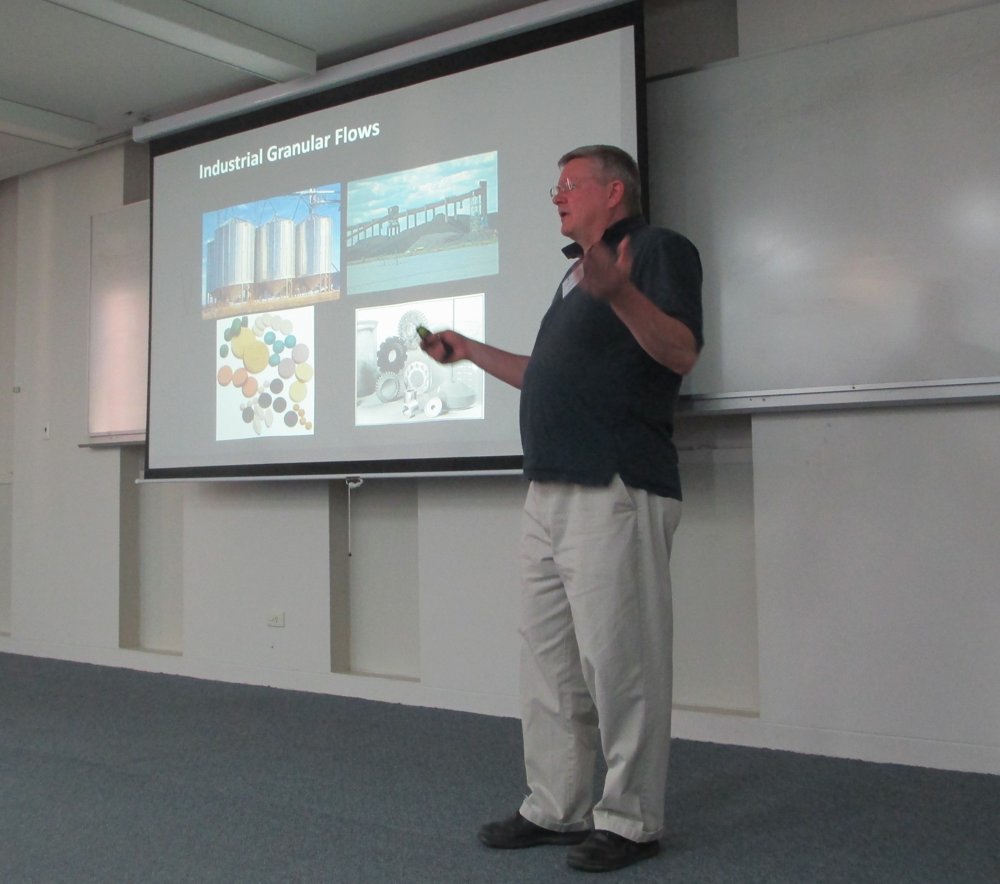

From nano- to meso-scale:
modelling materials and mechanisms
Held on January 12, 2016, at La Trobe University, Bundoora, Victoria.
Topics of this conference were at the intersection of mathematical analysis, materials modelling and experiments, and included pattern formation, elasticity theory, micro and nano characterisation of structures and defects.
The event featured a talk by Prof. Sir John Ball, FRS from the University of Oxford, and former president of the International Mathematical Union. John Ball is one of the prominent leaders of the revolution which occurred in the 1970s across mathematics and mechanics when calculus of variations methods, such as those developed by Morrey and de Giorgi, have been used in conjunction to nonlinear mechanics with the aim of modelling materials for engineering applications.
Programme
| 10:00 | John Sader | Melbourne | Time dependent fluid mechanics at nanometre length scales | ||
| 10:50 | Break | ||||
| 11:20 | John Ball | Oxford | Nucleation and interfaces in martensitic phase transformations | ||
| 12:10 | Brian Abbey | La Trobe | Materials characterisation at multiple lengthscales via coherent diffraction and neutron Bragg diffraction | ||
| 13:00 | Lunch | ||||
| 14:30 | Philip Broadbridge | La Trobe | Exact solutions of nonlinear boundary value problems for curvature-driven metal surface evolution | ||
| 15:20 | Yann Bernard | Monash | The Willmore energy and applications | ||
| 16:10 | Break | ||||
| 16:40 | Guy Metcalfe | Monash | What's Shaking in the Sandbox? Pattern Formation in Granular Materials | ||
| 17:30 | Break | ||||
| 18:30 | Dinner |
Organisers
| Pierluigi Cesana (main organiser) |
| Nathan Clisby |
| Dimetre Triadis |
| Philip Broadbridge |
Photos
 |
|
 |
|
|  |  |
 |
 |
Logo / embedded image: Incompatible martensitic microstructure in Ti-23Nb-3Al SMA. Courtesy of Tomonari Inamura.